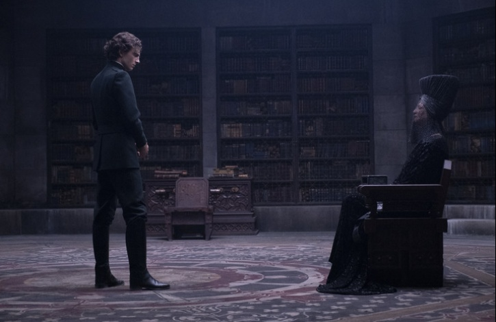

Где и как снимали фильм Дюна
Декорации, костюмы и локации
 16 сентября в российском прокате стартует новый фильм номинанта на премию «Оскар» Дени Вильнева ДЮНА. Проект, произведенный совместно со студиями Warner Bros. и Legendary Pictures, является экранизацией одноименного бестселлера Фрэнка Герберта.
Наследник знаменитого дома Атрейдесов Пол отправляется вместе с семьей на одну из самых опасных планет во Вселенной – Арракис. Здесь нет ничего, кроме песка, палящего солнца, гигантских чудовищ… и основной причины межгалактических конфликтов – невероятно ценного ресурса, который называется меланж. В результате захвата власти Пол вынужден бежать и скрываться, и это становится началом его эпического путешествия. Враждебный мир Арракиса приготовил для него множество тяжелых испытаний, но только тот, кто готов взглянуть в глаза своему страху, достоин стать избранным.
Роли в фильме исполнили Тимоти Шаламе, Ребекка Фергюсон, Оскар Айзек, Джош Бролин, Стеллан Скарсгард, Дейв Батиста, Стивен Хендерсон, Зендея, Чан Чэнь, а также Шарлотта Рэмплинг, Джейсон Момоа, Хавьер Бардем и другие. Вильнев поставил ДЮНУ по сценарию, написанному им вместе с Джоном Спэйтсом и Эриком Ротом («Форрест Гамп») по роману Фрэнка Герберта. Продюсерами картины стали Мэри Пэрент (ВЫЖИВШИЙ), сам Вильнев, Кейл Бойтер и Джозеф М. Карачиоло.
Место съемок и декорации
Планета Арракис, или же Дюна, – огромная пустыня с безграничными закатами и аскетичной красотой. Чтобы воплотить концепцию Вильнева, творческие команды во главе с оператором-постановщиком Грегом Фрейзером и художником-постановщиком Патрисом Верметтом работали над тем, чтобы камера как можно точнее передала царящую атмосферу. Это означало отказ от зеленого экрана и создание идеального мира ДЮНЫ на Земле, в звуковых павильонах студии Origo в Будапеште, на съемочных площадках в Иордании и в Абу-Даби.
Звуковые павильоны в столице Венгрии уже использовались студией, но еще ни разу – для съемок подобного масштаба.
Как только Вильнев и Фрейзер начали совместную работу над ДЮНОЙ, они быстро нашли общий язык. Прежде всего, по словам Вильнева, они условились, что будут использовать формат IMAX для отдельных эпизодов фильма, как то видений Пола, его снов и кадров с пустыней. Все остальное было решено снимать в формате 2:35. Таким решением планировалось усилить эффект от изображения IMAX у зрителей. Также команда определилась, что сцены пустыни будут сниматься на ручную камеру, но остальной мир будет сделан более привычным способом.
Фрейзер подтверждает и дополняет слова режиссера. «Мы пытались создать то самое ощущение суровых условий, о котором говорил Дени. Прежде всего он сказал: «Когда я думаю об этом фильме, мне приходит на ум формат 4:3». Это формат большого экрана. Мы развили эту мысль и предложили сделать 2:35 наряду с 4:3 и IMAX – посмотреть, что получится. Обсудив по-разному эти идеи, мы пришли к соглашению».
Что касается цвета, отмечает Фрейзер, то постановщики пробовали несколько вариантов. Вильнев хотел, чтобы Арракис выглядел суровым и безлюдным, негостеприимным для чужаков, поэтому съемки при ясном небе были сведены к минимуму. Фрайзер рассказывает, что есть множество фотографий пустыни, где небо синее, а песок желтый. Однако Вильнев и Фрайзер склонялись к белому небу и блеклому, обесцвеченному песку. Поначалу у авторов были горячие дискуссии о том, что лучше использовать – цифровую камеру или пленочную. «У пленки прекрасный формат и несомненное, потрясающее качество; притом она аналоговая, и в этом есть что-то теплое, близкое людям, – поясняет он. – Но тут возникла проблема: съемка на «Алексу» дала бы нам необходимое качество и теплоту, но без ощущения ностальгии, которое предлагает пленка».
В итоге была использована другая технология: пленка была сделана с «цифры», то есть при монтаже фильма в лаборатории Fotokem сняли его на пленку и сделали негатив. Затем этот негатив был отсканирован снова, так что фильм все же отчасти аналоговый. Как отмечает Фрайзер, он какое-то время играл с этой технологией, но прежде для полнометражного фильма она не использовалась.
Продюсер Мэри Пэрент также высоко оценила работу творчекской команды. «Грег – один из лучших операторов-постановщиков. То, как он проводил съемку, добивался нужного света и деталировки… Это так ощутимо, так трогательно и интуитивно... В то же время движение камеры совсем не ощущается; нет никакой суетливости, все служит повествованию и раскрытию персонажей, в данном случае – самой Дюны. А то, что Патрис выстроил в Будапеште – это был старый добрый Голливуд, – продолжает она. – Такие огромные декорации теперь редко встретишь – все рисуется в CGI, но ради этого фильма Дени принял решение все делать по-настоящему. Так что в этот раз мы строили с большим размахом».
На студии Origo создавались, в числе прочих, интерьеры помещений с планеты Каладан, где начинается действие фильма – например, обстановка огромной библиотеки, где леди Джессика и преподобная мать Мохайем обсуждают будущее Пола, а также залы резиденции Атрейдесов. В студии была построена и парилка на Гиди Прайм, где мы впервые встречаем барона Харконнена. Некоторые уличные сцены, в том числе сцена приземления орнитоптера на Арракис, снимались на заднем дворе студии. В экспертную команду вошло около тысячи человек.
«Создавая обстановку, я ставил цель максимально приблизить ее к той, что описывал Герберт – как он изображал мебель, залы, здания, архитектуру, свет, чтобы даже самые преданные фанаты узнали почерк автора, – объясняет Вильнев. – Я хотел во всем передать дух книги, так же, как автор, вдохновляться природой: светом, ветром, ощущением пыли в воздухе. Дюна – величественный мир, не похожий на те, что мы знаем. Разумеется, я доверил Патрису помочь мне в ее создании».
После прочтения сценария Верметт сразу начал составлять коллаж из фотографий самых разных стран – от Египта до Норвегии, изображений архитектурных фрагментов, даже кадры военной хроники, снятые в Афганистане и Персидском заливе. Этот коллаж затем вошел в книгу иллюстраций Патриса, которая включала в себя эскизы каждой съемочной площадки, всех предметов декорации и костюмов. Ее распространили между отделами для дальнейшей работы. «Для меня было важно, чтобы мы все находились «на одной странице», так что если кто-нибудь спрашивал: «Как это должно выглядеть?», я неизменно отвечал: «Смотрите в книге, там все расписано».
Верметт разработал палитру для Каладана преимущественно в тускло-зеленом, сером и голубом тонах, что создает ощущение постоянной влажности и дождливости. Замок Каладан встроен в скалу, что символизирует единение дома Атрейдесов с природой. Сдержанные оттенки зеленого сменяются ярко-коричневыми, охристыми и красно-бурыми, когда история переносится на Арракис. В свою очередь индустриальная планета Гиди Прайм кажется созданной из пластика.
Художник-декоратор Ричард Робертс стремился добиться того, чтобы декор интерьеров помогал в создании общей атмосферы сцены, а не перетягивал внимание на себя. Мебель была подобрана, чтобы выглядеть в картине аскетично. Все предметы были сделаны на заказ в Дании: от мебели и светильников до знамен и ковров. Затем их, как и прочий реквизит, искусственно состарили. Одним из самых амбициозных дизайн-проектов, созданных Верметтом, стал проект орнитоптера – огромного летательного аппарата, которые порхают над Дюной. Верметт его разработал в сотрудничестве с концепт-художником Джорджем Халлом и арт-директором по орнитоптерам Дэвидом Дораном. По словам Верметта, у аппартара есть очень подвижные крылья – благодаря им он может зависать в воздухе подобно колибри или стрекозе. Размах этих крыльев – почти 40 метров, длина – около 23. «Моделями» для художника были птицы, насекомые и вертолеты.
В то же самое время в студии Origo были сконструированы две версии пилотных кабин орнитоптеров: одну разместили на подвесной раме в съемочном павильоне, другую – на таком же подвесе установили на холме в Фоте неподалеку от Будапешта.
Команда провела почти четыре недели в иорданской пустыне Вади-Рам, которая дала съемочной группе возможность создать некоторые виды Арракиса, а также послужила основой для ряда визуальных эффектов и кадров, сделанных с вертолетов. Вильнев уже снимал фильмы в Иордании и хорошо знал, какие сокровища там можно найти. Как отмечает режиссер, в местных пейзажах довольно много драматизма, что как раз подходит для ДЮНЫ.
Зрелищные виды – не единственное, чем Иордания привлекает кинематографов. «Там много опытных людей, которые помогут подобрать и устроить площадку для съемки, – говорит Вильнев. – Организация и управление там налажены на высшем уровне: все дороги в пустыне отмечены на карте, оборудование – по последнему слову техники. Иорданцы – очень гостеприимный народ: нас было почти 800 человек – фильм не маленький, но у меня все равно возникало ощущение, что я снимаю кино с друзьями. Вернуться спустя десять лет после съемки ПОЖАРОВ и встретить тех же помощников, которые притом стали гораздо опытнее, было очень трогательно».
Одну из основных съемочных локаций местные называют «Военные дюны» – она расположена на границе с Израилем, и армия использует ее для учений. Раньше она была недоступна для посещений, так что авторам фильма повезло. Съемочной команде ДЮНЫ первой разрешили там снимать, хотя к плюсам такой съемки прилагались неожиданные минусы: ранее в этой совершенно девственной части пустыни никто не ходил. Дюны беспрепятственно смещает ветер, они рассыпаются и формируются заново, что крайне осложняет работу съемочной группы. В этой локации были отсняты самые большие сцены действия, включая ключевой эпизод с комбайном для сбора специи, который Джордж Халл описывает как помесь пустынного скарабея и ракетного двигателя.
До появления съемочной группы главный менеджер по съемочным площадкам Ник Оливер и его команда должны были разбить базовый лагерь на те четыре недели, которые отводились под съемку. Так как в той части Иордании нет ничего, кроме песка, понадобилось почти шесть недель и 200 рабочих, чтобы построить лагерь и снабдить его всем необходимым. Команда создала огромную инфраструктуру: привезла блок-контейнеры, развернула сеть мобильной связи, а в основном подразделении вместо трейлеров или жилых фургонов поставили стационарные домики для актеров. Еще у них были воздушные компрессоры, чтобы песок не засорял оборудование и электронику. Как только были закончены работы в одной локации, команда ехала дальше, к следующей базе, и начинала все заново.
Команда столкнулась с многочисленными логистическими сложностями, особенно при доставке на съемочную площадку гигантской модели орнитоптера. Оливеру и его коллегам пришлось проложить дорогу через пустыню, чтобы шестиколесные грузовики смогли перевезти аппарат на место съемки. Для завершения сцены, в которой Дункан Айдахо падает с неба на скалы, потребовалась огромная работа страховщиков и был нанят 300-тонный кран, чтобы держать риг с тросом для каскадера и обеспечивать его безопасность. На другой площадке под названием «Каменная чаша» возникли непредвиденные трудности с установкой страховки, так как поверхность скалы оказалась рыхлой, а сверлить ее запрещал закон охраны природы. Команде пришлось привезти из Аммана специалистов, которые нашли участки, куда можно было, не повреждая скалу, установить скобы, достаточно крепкие для удержания каскадеров на тросах.

Костюмы, грим и прически
Художники по костюму Жаклин Уэст и Боб Морган отвечали за создание множества одежд, используемых персонажами фильма. От них требовалось разработать множество футуристических костюмов, не прибегая к стандартным ориентирам. С самого начала Вильнев сказал: «Никаких космолетов и инопланетян». Ему нужно было больше психологии.
Костюмеры перебрались из Лос-Анджелеса в Будапешт и собрали вокруг себя опытных коллег из разных уголков планеты. Уэст и Морган перелопатили горы материала, относящегося к будущему и прошлому. «Дени много рассказывал о кочевниках, о пустынных народах и разных пустынях в мире, о том, как люди одеваются, чтобы там выживать, – вспоминает Уэст. – Мы пересмотрели массу картин, средневековых миниатюр – когда-то я их изучала на курсе истории искусства. Я просмотрела множество полотен Гойи, которые заворожили меня тем, как на них представлена религиозная тема, добро и зло. В романе также содержатся отсылки к древнегреческой мифологии, что привело меня к очередной кроличьей норе».
Авторы костюмов также стремились к тому, чтобы их творения были функциональными. «Из всех изученных нами материалов следовало, что внешний вид должен быть подчинен функции, – поясняет Морган. – Это касалось всего костюма, начиная с обуви, и зависело от того, что персонажам приходилось делать для выживания, особенно в условиях пустыни. В то же время костюмы должны были выглядеть правдоподобными для мира, технологии которого не имеют ничего общего с компьютерными и кажутся довольно примитивными по меркам наших представлений о будущем. Мы потом назвали этот стиль современно-средневековый».
Уэст и Морган отталкивались от общей цветовой гаммы планет, на которых жили персонажи. Костюмы Атрейдесов были большей частью зеленого цвета, так как на планете Каладан прохладно и сыро, часто идут дожди и буйно растут трава и деревья. Арракис, наоборот, покрыт скалистой пустыней, поэтому костюмы местных жителей должны были иметь песочно-желтый и бежевый цвета. Одним из важнейших костюмов был конденскостюм – высокотехнологичный комбинезон фрименов. Благодаря технологии сбора и фильтрации жидкости костюм позволяет выживать в пустыне. Согласно книге, внутри дистикомба находится сложная система канальцев с подачей жидкости и носовой трубкой для отведения выдыхаемого воздуха. Также в костюме расположена система переработки мочи и пота, так что его носитель теряет лишь глоток воды в день. Концепт-арты дистикомба нарисовал художник Кит Кристенсен. Морган и Уэст добавили к образу полупрозрачные плащи и накидки, которые во многом служили камуфляжем. Их песчаный цвет разнообразил серые оттенки дистикомбов.
Для каждой из армий была сделана различная военная форма определенного цвета: для сардукаров – безжалостных элитных бойцов императора – разработаны белые бронескафандры с красными знаками различия, которые зловеще горели в темноте. Атрейдесы носили серые доспехи, а харконнены были похожи на насекомых в черных чешуйчатых латах и шлемах, похожих на муравьиные головы.
Для преподобной матери Моийам художники выбрали образ, сочетающий в себе черты шахматного ферзя и дамы из марсельского таро. Черный и строгий костюм состоит из платья в пол с длинными рукавами и накидки, украшенной шитьем. Ее высокий головной убор напоминает камилавку греческих монахов, обшитую черным бархатом, с черной бисерной вуалью, закрывающей лицо.
Образ монструозного барона Харконнена создавался под впечатлением от роли полковника Курца из АПОКАЛИПСИСА СЕГОДНЯ Копполы в исполнении Марлона Брандо. Барон Харконнен – средоточие тьмы. Его авторы одели в слегка просвечивающую мантию из черного шелка.
Гардероб леди Джессики представлял для художников отдельную сложность, так как на Каладане она была облачена в темные, почти монашеские одеяния, а на Арракисе носит более яркие, солнечные оттенки. Впервые мы видим ее в длинном черном платье с покрывалом на голове, а по прибытии на Арракис она носит облегающее бежевое, дополненное изысканной золотой вуалью и перчатками, а также летящим плащом с капюшоном. Ее фрейлины также одеты в наряды всех оттенков пустыни – желтых, охристых, янтарных. Их цвета творческая команда подсмотрела на рынке специй в Марракеше.
Для Питера де Врие они с Морганом создали костюм человека-кинжала – облегающий, черный и строгий. Другой его наряд был данью уважения к одному из любимейших фильмов Уэст и Вильнёва – СЕДЬМОЙ ПЕЧАТИ Бергмана.
Также костюм Пола Атрейдеса обязан своим происхождением еще одной киноклассике, снятой в пустыне. «Для меня, – объясняет Морган, – Пол Атрейдес всегда был Лоуренсом Аравийским, который повел войско арабов на бой с турками. Пожалуй, то, как он был одет в пустыне, с повязкой на голове и плащом, было нашей данью уважения Дэвиду Лину».
За макияж, прически и грим отвечал Дональд Моват, который четвертый раз работает с Вильневым. Художник признался, что, в отличие от остальных участников проекта, книгу не читал. Свои эскизы для грима и причесок он описывает как «основанные на реальности с современными и архаичными элементами, разработанные для невероятного актерского состава и массовки».
Вдохновение Моват черпал в статьях по антропологии, истории искусства, фотографии и даже монастырской жизни. Так он создал различные образы для каждого кочевника-фримена. Солдат Атрейдеса в фильме можно узнать по стрижке, напоминающей военную, с выбритым затылком и висками. Команда актеров оценила креативность Мовата. Ребекка Фергюсон говорит о леди Джессике: «Мы решили, что Джессика должна выглядеть почти тускло, так как она – не королева при короле, а по сути наложница. У нее много власти, но не того сорта, что ищет внимания. Она – защитница, стоящая на шаг позади Лето, вдали от глаз. Поэтому Дональд разработал очень простой образ – без грима, что отлично ей подошло».
Гарни Холлеку, военачальнику атрейдесов в исполнении Джоша Бролина, нужно было добавить шрам для большего натурализма, оригинальности и, разумеется, соответствия сюжету. Для Стилгара, предводителя фрименов, Моват, по его словам, хотел приготовить что-то особенное. Он плотно работал с Хавьером Бардемом, чтобы сделать то, что ему понравится – так появились «старые» татуировки и грим вокруг глаз.
Харконнены в целом приобрели стилизованный, безволосый вид благодаря гриму в тон кости/алебастра, накладкам на брови и искусственным лысинам. Безжалостным сардукарам придали более маскулинный вид: у них появились бороды, зачесанные назад волосы и татуировки на лбу.
Для твари Дейва Батисты и Питера де Врие Дастмалчяна потребовался более сложный грим – ментату добавили татуировку губ (по аналогии с Сафиром Хаватом из дома Атрейдесов в исполнении Стивена Маккинли Хендерсона). Самой сложной работой оказалось создание образа барона Харконнена. «Это была целая эпопея, – вспоминает Моват, – поскольку Стеллан Скарсгард находился в «голом» полноразмерном пластическом костюме. С подобным персонажем грим очень легко испортить. Он может стать комичным, поскольку в таком костюме актер сразу становится похож на персонажа из ОСТИНА ПАУЭРСА или ВАШЕЙ БРИТАШИ». Отчасти одновременно с Уэст и Морганом Моват обнаружил, что барон в его представлении – свирепый, гориллоподобный гибрид ролей Марлона Брандо из АПОКАЛИПСИСА СЕГОДНЯ и ОСТРОВА ДОКТОРА МОРО.
Для создания костюма Моват привлек команду из двух шведских гримеров, Лав Ларсон и Евы фон Бар. Сначала понадобилось сделать слепок с головы, лица и всего тела Скарсгарда: актеру пришлось неподвижно стоять почти два часа под тяжелым слоем силикона и гипсовых повязок для поддержания силиконовой формы и каркаса. «Дени и Стеллану понравилось, как он выглядит без одежды, – поясняет Ларсон, – так что Жаклин Уэст и Боб Морган, художники по костюмам, начали разрабатывать новые концепции его костюма из более тонкой, полупрозрачной ткани, не скрывающей тело».
В целом стокгольмская мастерская изготовила шесть пластических костюмов, над которыми работал штат постоянных сотрудников и два нанятых испанских скульптора для завершения рельефа тела. Костюмы предстояло использовать для сцен с бароном Харконненом в бане, где команду гримеров ожидали новые трудности. «Мы провели ряд испытаний костюма в воде, – говорит фон Бар, – и скоро поняли, что он слишком плавуч и не сможет легко погрузиться под воду. К тому же, оказавшись там, костюм превращался в губку и впитывал так много воды, что достать его становилось еще труднее!» Также пришлось проделать отверстия, чтобы пропустить в них ремни безопасности, так как по сюжету барон должен был еще и парить в воздухе. Команде нужно было постоянно быть на подхвате во время съемки сцен полета, проверяя надежность конструкции, когда Скарсгард приземлялся.
Процесс облачения в костюм занимал порядка семи часов. Фон Бар вспоминает: «В костюме Стеллану становилось очень жарко, поэтому мы сначала одели его в охлаждающий жилет, что немного помогло. Затем нам нужно было спрятать волосы под искусственную лысину, закрыть накладкой шею и надеть головную часть с нахлестом на спину – одну из самых объемных. Потом наступала очередь лепить подбородок, щеки и ушные раковины. Следующим этапом шли накладки-наручи общим весом примерно четыре кило. И, наконец, мы надевали мышечный внутренний костюм, а после него – кожу».

Эффекты и звук
Тому Стратерсу, координатору трюков и режиссеру второго плана, нужно было подготовить все сцены действия в ДЮНЕ, убедиться в их зрелищности и безопасности как для актеров, так и для каскадеров. Трюки и боевые сцены, разработанные Стратерсом и постановщиком боев Роджером Юанем, оказались одними из самых сложных на памяти Джейсона Момоа. «В одной из сцен я дрался одновременно с девятнадцатью каскадерами, чего со мной еще не бывало, – объясняет он. – Мы долго тренировались перед съемками. Дени обычно не снимает боевиков, так что было непривычно чувствовать его волнение и узнать, как он видит готовую сцену».
Ребекку Фергюсон удивило, как точно Юань и Стратерс отразили характер леди Джессики в ее боевой манере. «У Джессики очень точный способ ведения боя, – поясняет актриса. – И для нее это идеально подходит, поскольку она как телохранительница и защитница держит под контролем всю обстановку, считывает людей, предвидит то, что вот-вот произойдет. Она очень быстрая и ловкая – умственно и физически, и такова же ее техника боя».
В команде Вильнева был также эксперт по части спецэффектов Герд Нефцер, которого просили воссоздать бушующие песчаные бури, где главные персонажи попадали в ключевые моменты сюжета. Это при том, что Вильнев был настроен на съемки большей части фильма, не прибегая к CGI. Чтобы воссоздать песчаную бурю, Нефцеру пришлось запастись пылью подходящего к иорданским пескам цвета. Ее поиски заняли почти десять недель. «Цвет должен был точно совпасть, и она должна была легко носиться в воздухе, – говорит специалист. – В итоге мы использовали натуральный продукт, который обычно применяют в косметике. Во избежание проблем со здоровьем нужно было следить за тем, чем дышат актеры и съемочная группа, поэтому мы старались держать свою «пыль» подальше от них и использовать ее только на камеру».
Еще для картины потребовалось создать бурю с дождем, пар для бани барона Харконнена, сымитировать взрывы и пожар. Например, в саду на Арракисе росло несколько драгоценных пальм, которые по сценарию должны были загореться. После нескольких испытаний команда соорудила примерно 250 пальмовых ветвей на стальных стволах, внутрь которых был проведен газ. Внешне деревья оставались без повреждений, несмотря на 10 километров пропущенной газовой трубки.
Нефцеру также потребовалось изобразить видимость нападения песчаных червей – исполинских роющих существ, которые за мили чуют движение на поверхности и перемещаются под землей с невероятной скоростью. Самих червей создавала команда по визуальным эффектам во главе с Полом Ламбертом. Когда черви движутся под землей, вся пустыня дрожит, а песок сотрясается. Для создания этого эффекта, как говорит Нефцер, построили большую платформу в пустыне и подключили десять вибрационных двигателей: «Мы проводили испытания с песком разного вида, и в конце концов использовали большой деревянный ротор наряду с двигателями сильной вибрации. Сработало хорошо».
Ламберт знал, что Вильнев хочет показать зрителям максимально реалистичную Дюну. При сотрудничестве с другими отделами студии он смог придумать множество различных подходов к тому, чтобы добиться от визуальных эффектов фотографического реализма. Таким уникальным подходом стало изобретение песочного экрана: вместо того, чтобы взять голубой или зеленый экран, команда сделала его песочного цвета, так как все рирфоны или компьютерные фоны будут нарисованы в этих тонах. Таким образом, все экшн-сцены переднего плана будут сняты в нужных оттенках, что очень сильно облегчило задачу по объединению слоев. Бонусом этой технологии является то, что при инвертировании песочного цвета при композитинге получится голубой, который затем можно при необходимости использовать как экран для более традиционного метода вычитания. Конечно, с песочным экраном возникли свои сложности – кожа и одежда подобного цвета добавляли трудностей при обработке, зато при съемке получался более, а при композитинге – гораздо более натурально выглядящий материал, полученный вычитанием из фона схожих с финальным оттенков. Как отмечает Ламберт, это простая, но подходящая для данного фильма техника, в котором песок играет столь важную роль.
В кино, помимо визуальной, есть и аудиосоставляющая. В качестве звуковых редакторов выступили Марк Манжини и Тео Грин, а Даг Хефхилл и Рон Бартлетт были звукорежиссерами перезаписи. Все вместе они работали над БЕГУЩИМ ПО ЛЕЗВИЮ 2049. Редакторы начали сразу обсуждать ключевые повторяющиеся аудиоэлементы сюжета, одним из которых был звук колотушки, с помощью которой фримены приманивают песчаных червей. Манжини также рассказал, что вскоре они вернулись на свой полигон для создания записи. «В течение дня в пустыне мы разрабатывали элементы песчаного барабана, даже закопали в песок гидрофоны – микрофоны, используемые под водой, – и стучали по песку для достижения нужного эффекта. При помощи гидрофонов, – добавляет он, – у нас еще получилось уловить новый для нас звук – подземный стон, о котором мало кто слышал. Огромные массы песка при определенной влажности и температуре, в определенное время года издают стон, похожий на прекрасное пение китов. В фильме это придало пустыне свойство отдельного персонажа: она словно обрела голос».
Голос оказался еще одним неожиданным инструментом в создании картины, когда Вильнев снова обратился к Хансу Циммеру за созданием музыкального сопровождения. Зная, что Циммер – поклонник романа Герберта, Вильнев с самого начала надеялся объединить усилия с композитором. «Мы согласились, что музыка должна быть одухотворенной, почти церковной, – утверждает Вильнев. – Такой, которая возвышала бы душу, как может только религиозное песнопение. И я уверен, что Хансу удалось этого добиться. Ханса вдохновили звучания песка и ветра, поскольку на Дюне ритм – это все. Ритм – это жизнь, хотя он может быть и смертью, поскольку привлекает песчаных червей. Поэтому первое, о чем мы заявили – что наш подход к ритму будет уникальным. Пока мы были заняты съемками, Ханс провел массу экспериментов: он пытался определить новый музыкальный язык. Он постоянно говорил мне, что эта музыка – не из нашего мира, а с другой планеты, из другой эпохи. Он хотел создать звуковую среду, какой мы еще никогда не слышали, и месяц за месяцем придумывал новые инструменты, искал, создавал новые звуки, раздвигал границы. В фильме присутствуют рваные, скачкообразные ритмы из репертуара Ханса, которые кажутся мне каноном новой музыки», – заключает Вильнев.
Циммер принялся изобретать инструменты, развивая мысль о том, что на Дюне существует совершенно иная цивилизация. Однако оба автора сочли общей для любой цивилизации одну вещь: силу человеческого голоса. «Мы с Дени сошлись на том, что эту историю делают женские персонажи (при особенно мощном влиянии Бинэ Гессерит), – отмечает композитор. – Так что музыка к фильму базируется главным образом на женских голосах. Мы разработали свой собственный язык. Музыкальная составляющая фильма – нечто экстраординарное, выходящее за рамки представлений об оркестровом сопровождении».
Монтажер Джо Уокер также описывает нюансы монтажа под формат IMAX. «В монтажной комнате почти невозможно разглядеть все детали, которые видны на большом экране, так что приходилось постоянно переключаться. Все-таки здорово сидеть и рассматривать все в формате IMAX: видна каждая деталь, когда смотришь на пустыню в подобном разрешении. Детализация на тех кадрах была невероятная. Однако для IMAX приходится немного иначе монтировать, – говорит Уокер. – Приходится идти на компромисс, так как если нарезать и менять кадры слишком часто, люди начинают напрягать глаза. Когда взгляду приходится метаться из одной точки в другую, отстоящую на двадцать метров, это серьезное мышечное усилие, и с ним лучше не перестараться. Поэтому в некоторых таких сценах мы подошли к монтажу с позиции зрителей: просто сидели и наслаждались великолепием».
Один из ключевых моментов отметил сам Дени Вильнев: «Для меня ДЮНА – это признание в любви к большому экрану. Такой она была задумана, такой создавалась, такой получилась. Однако ее история слишком сложна, чтобы уместиться в один фильм. Так что для меня ДЮНА – всего лишь затравка перед основным блюдом, второй частью, которая еще впереди».